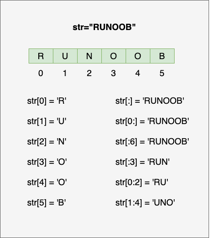

Python3 Cadenas
Las cadenas son el tipo de dato más utilizado en Python. Podemos usar comillas ('o") para crear cadenas.
Crear una cadena es muy sencillo, solo hay que asignar un valor a una variable. Por ejemplo:
Python accede a los valores en una cadena
Python no admite el tipo de carácter individual; un solo carácter también se usa como una cadena en Python.
Python accede a subcadenas, puede usar corchetes[]para extraer subcadenas. La sintaxis para extraer cadenas es la siguiente:
variable[índice inicial:índice final]
Los valores de índice comienzan con0como valor inicial,-1es la posición inicial desde el final.


Como en el siguiente ejemplo:
Ejemplo (Python 3.0+)
El resultado de ejecutar el ejemplo anterior es:
var1[0]: H var2[1:5]: unoo
Actualización de cadenas en Python
Puedes extraer una parte de la cadena y concatenarla con otros campos, como en el siguiente ejemplo:
Ejemplo (Python 3.0+)
El resultado de ejecutar el ejemplo anterior es:
已更新字符串 : Hello Ejemplo!
Caracteres de escape en Python
Cuando se necesitan usar caracteres especiales en una cadena, Python usa la barra invertida\como carácter de escape. Como se muestra en la siguiente tabla:
| Carácter de escape | Descripción | Ejemplo |
|---|---|---|
| \ (al final de la línea) | Continuación de línea |
>>> print("line1 \
... line2 \
... line3")
line1 line2 line3
>>>
|
| \\ | Símbolo de barra invertida |
>>> print("\\")
\
|
| \' | Comilla simple |
>>> print('\'')
'
|
| \" | Comilla doble |
>>> print("\"")
"
|
| \a | Campana (bell) |
>>> print("\a")Emite un sonido en la computadora al ejecutarse. |
| \b | Retroceso (Backspace) |
>>> print("Hello \b World!")
Hello World!
|
| \000 | Vacío |
>>> print("\000")
>>>
|
| \n | Nueva línea |
>>> print("\n")
>>>
|
| \v | Tabulación vertical |
>>> print("Hello \v World!")
Hello
World!
>>>
|
| \t | Tabulación horizontal |
>>> print("Hello \t World!")
Hello World!
>>>
|
| \r | Retorno de carro, mueve\rel contenido posterior al inicio de la cadena y reemplaza uno a uno los caracteres iniciales hasta que\rel contenido posterior se haya reemplazado por completo. |
>>> print("Hello\rWorld!")
World!
>>> print('google ejemplo taobao\r123456')
123456 ejemplo taobao
|
| \f | Salto de página (form feed) |
>>> print("Hello \f World!")
Hello
World!
>>>
|
| \yyy | Número octal, y representa un carácter de 0 a 7, por ejemplo: \012 representa nueva línea. |
>>> print("\110\145\154\154\157\40\127\157\162\154\144\41")
Hello World!
|
| \xyy | Número hexadecimal, comienza con \x, y representa el carácter, por ejemplo: \x0a representa nueva línea. |
>>> print("\x48\x65\x6c\x6c\x6f\x20\x57\x6f\x72\x6c\x64\x21")
Hello World!
|
| \other | Otros caracteres se muestran en formato normal. |
Usando\r para implementar un progreso porcentual:
Ejemplo
for i in range(101): # Agregar gráfico de barra de progreso y porcentaje
bar = '[' + '=' * (i // 2) + ' ' * (50 - i // 2) + ']'
print(f"\r{bar} {i:3}%", end='', flush=True)
time.sleep(0.05)
print()
En el siguiente ejemplo, usamos diferentes caracteres de escape para demostrar los efectos de comillas simples, nueva línea, tabulación, retroceso, salto de página, ASCII, binario, octal y hexadecimal:
Ejemplo
print("Hello, world!\nHow are you?") # Salida: Hello, world!
# How are you?
print("Hello, world!\tHow are you?") # Salida: Hello, world! How are you?
print("Hello,\b world!") # Salida: Hello world!
print("Hello,\f world!") # Salida:
# Hello,
# world!
print("El valor ASCII correspondiente a A es: ", ord('A')) # Salida: El valor ASCII correspondiente a A es: 65
print("\x41 es el código ASCII de A") # Salida: A es el código ASCII de A
decimal_number = 42
binary_number = bin(decimal_number) # Convertir decimal a binario
print('Convertir a binario:', binary_number) # Convertido a binario: 0b101010
octal_number = oct(decimal_number) # Convertir decimal a octal
print('Convertir a octal:', octal_number) # Convertido a octal: 0o52
hexadecimal_number = hex(decimal_number) # Convertir decimal a hexadecimal
print('Convertir a hexadecimal:', hexadecimal_number) # Convertido a hexadecimal: 0x2a
Operadores de cadena en Python
En la siguiente tabla, el valor de la variable a es la cadena "Hello" y el valor de la variable b es "Python":
| Operador | Descripción | Ejemplo |
|---|---|---|
| + | Concatenación de cadenas | a + b da como resultado: HelloPython |
| * | Repite la cadena | a*2 da como resultado: HelloHello |
| [] | Obtiene el carácter de la cadena mediante índice | ae |
| [ : ] | Extrae una parte de la cadena, siguiendo el principiode intervalo cerrado a la izquierda y abierto a la derecha; str[0:2] no incluye el tercer carácter. | a[1:4] da como resultadoell |
| in | Operador de pertenencia - Devuelve True si la cadena contiene el carácter dado. | 'H' in aResultado: True |
| not in | Operador de pertenencia - Devuelve True si la cadena no contiene el carácter dado. | 'M' not in aResultado: True |
| r/R | Cadena sin procesar (raw string) - Cadena sin procesar: todas las cadenas se usan directamente de acuerdo con su significado literal, sin escapar caracteres especiales o no imprimibles. La cadena sin procesar, excepto que se agrega la letra antes de la primera comilla de la cadenar（puede ser mayúscula o minúscula）, tiene una sintaxis casi idéntica a la de una cadena normal. | print( r'\n' ) print( R'\n' ) |
| % | Cadena de formato | Consulta el contenido de la siguiente sección. |
Ejemplo (Python 3.0+)
El resultado del ejemplo anterior es:
a + b 输出结果： HelloPython a * 2 输出结果： HelloHello a[1] 输出结果： e a[1:4] 输出结果： ell H 在变量 a 中 M 不在变量 a 中 \n \n
Formato de cadenas en Python
Python admite la salida de cadenas formateadas. Aunque esto puede implicar expresiones muy complejas, el uso más básico es insertar un valor en una cadena con el formato %s.
En Python, el formateo de cadenas usa la misma sintaxis que la función sprintf en C.
Ejemplo (Python 3.0+)
El resultado del ejemplo anterior es:
我叫 小明 今年 10 岁!
Símbolos de formato de cadenas de Python:
| Símbolo | Descripción |
|---|---|
| %c | Formatea caracteres y su código ASCII |
| %s | Formatea cadenas |
| %d | Formatea enteros |
| %u | Formatea enteros sin signo |
| %o | Formatea números octales sin signo |
| %x | Formatea números hexadecimales sin signo |
| %X | Formatea números hexadecimales sin signo (mayúsculas) |
| %f | Formatea números de punto flotante, puede especificar la precisión decimal |
| %e | Formatea números de punto flotante con notación científica |
| %E | Igual que %e, formatea números de punto flotante con notación científica |
| %g | Abreviatura de %f y %e |
| %G | Abreviatura de %f y %E |
| %p | Formatea la dirección de una variable con números hexadecimales |
Directivas auxiliares de los operadores de formato:
| Símbolo | Función |
|---|---|
| * | Define el ancho o la precisión decimal |
| - | Se usa para alinear a la izquierda |
| + | Muestra un signo más ( + ) antes de números positivos |
| <sp> | Muestra un espacio antes de números positivos |
| # | Muestra '0' delante de números octales, y '0x' o '0X' delante de números hexadecimales (dependiendo de si se usa 'x' o 'X') |
| 0 | Rellena con '0' delante de los números mostrados en lugar del espacio predeterminado |
| % | '%%' produce un solo '%' |
| (var) | Variable de mapeo (parámetro de diccionario) |
| m.n. | m es el ancho total mínimo de visualización, n es el número de dígitos después del punto decimal (si está disponible) |
Desde Python 2.6, se agregó una nueva función para formatear cadenasstr.format(), que mejora la funcionalidad del formato de cadenas.
Comillas triples en Python
Las comillas triples de Python permiten que una cadena abarque varias líneas; la cadena puede contener saltos de línea, tabulaciones y otros caracteres especiales. Ejemplo:
Ejemplo (Python 3.0+)
El resultado de ejecutar el ejemplo anterior es:
这是一个多行字符串的实例 多行字符串可以使用制表符 TAB ( )。 也可以使用换行符 [ ]。
Las comillas triples liberan al programador del atolladero de las comillas y las cadenas especiales, manteniendo desde el principio hasta el final el formato de un pequeño bloque de cadena, que es el llamado formato WYSIWYG (lo que ves es lo que obtienes).
Un caso de uso típico es cuando necesitas un bloque de HTML o SQL; en ese momento, usar combinación de cadenas y escapes de caracteres especiales resulta muy tedioso.
f-string
f-string se agregó en versiones posteriores a Python 3.6, se denomina cadena de formato literal y es la nueva sintaxis para formatear cadenas.
Antes solíamos usar el signo de porcentaje (%):
Ejemplo
>>> 'Hello %s' % name
'Hello Ejemplo'
f-stringLas cadenas de formato comienzan confcomo prefijo, seguidas de la cadena; las expresiones dentro de la cadena se encierran con llaves {}, y se reemplazan por el valor calculado de la variable o expresión. Ejemplo:
Ejemplo
>>> f'Hello {name}' # Reemplazar variable
'Hello Ejemplo'
>>> f'{1+2}' # Usar expresión
'3'
>>> w = {'name': 'Ejemplo', 'url': 'www.example.com'}
>>> f'{w["name"]}: {w["url"]}'
'Ejemplo: www.example.com'
Usar este método es claramente más simple, ya no hay que decidir si usar %s o %d.
En la versión de Python 3.8 se puede usar el=símbolo para concatenar la expresión de operación y su resultado:
Ejemplo
>>> print(f'{x+1}') # Python 3.6
2
>>> x = 1
>>> print(f'{x+1=}') # Python 3.8
x+1=2
Cadenas Unicode
En Python 2, las cadenas normales se almacenan en código ASCII de 8 bits, mientras que las cadenas Unicode se almacenan como cadenas Unicode de 16 bits, lo que permite representar más conjuntos de caracteres. La sintaxis utilizada es añadir el prefijo delante de la cadena.u。
En Python 3, todas las cadenas son cadenas Unicode.
Funciones integradas de cadenas de Python
Las funciones integradas más comunes para cadenas de Python son las siguientes:
| N.º | Método y descripción |
|---|---|
| 1 | capitalize() |
| 2 | Devuelve una cadena centrada con el ancho especificado width; fillchar es el carácter de relleno, por defecto un espacio. |
| 3 | count(str, beg= 0,end=len(string)) Devuelve el número de veces que aparece str en string; si se especifican beg o end, devuelve el número de apariciones de str dentro del rango especificado. |
| 4 | bytes.decode(encoding="utf-8", errors="strict") En Python 3 no hay un método decode, pero podemos usar el método decode() del objeto bytes para decodificar un objeto bytes dado; este objeto bytes puede ser devuelto por str.encode(). |
| 5 | encode(encoding='UTF-8',errors='strict') Codifica la cadena con el formato de codificación especificado por encoding; si hay un error, por defecto se lanza una excepción ValueError, a menos que errors especifique 'ignore' o 'replace'. |
| 6 | endswith(suffix, beg=0, end=len(string)) |
| 7 | Convierte los caracteres de tabulación en la cadena string en espacios; el número predeterminado de espacios por tabulación es 8. |
| 8 | find(str, beg=0, end=len(string)) Detecta si str está contenido en la cadena; si se especifica un rango beg y end, comprueba si está contenido en ese rango. Si lo está, devuelve el índice inicial; de lo contrario, devuelve -1. |
| 9 | index(str, beg=0, end=len(string)) Igual que el método find(), excepto que si str no está en la cadena, lanza una excepción. |
| 10 | Comprueba si la cadena está compuesta por letras y números, es decir, todos los caracteres de la cadena son letras o dígitos. Si la cadena tiene al menos un carácter y todos son letras o dígitos, devuelve True; de lo contrario, devuelve False. |
| 11 | Si la cadena tiene al menos un carácter y todos los caracteres son letras o caracteres chinos, devuelve True; de lo contrario, devuelve False. |
| 12 | Si la cadena solo contiene dígitos, devuelve True; de lo contrario, devuelve False. |
| 13 | Si la cadena contiene al menos un carácter que distingue entre mayúsculas y minúsculas, y todos esos caracteres (sensibles a mayúsculas/minúsculas) están en minúscula, devuelve True; de lo contrario, devuelve False. |
| 14 | Si la cadena contiene solo caracteres numéricos, devuelve True; de lo contrario, devuelve False. |
| 15 | Si la cadena contiene solo espacios en blanco, devuelve True; de lo contrario, devuelve False. |
| 16 | Si la cadena está en formato título (ver title()), devuelve True; de lo contrario, devuelve False. |
| 17 | Si la cadena contiene al menos un carácter que distingue entre mayúsculas y minúsculas, y todos esos caracteres (sensibles a mayúsculas/minúsculas) están en mayúscula, devuelve True; de lo contrario, devuelve False. |
| 18 | Usa la cadena especificada como separador y combina todos los elementos (representación en cadena) de seq en una nueva cadena. |
| 19 | Devuelve la longitud de la cadena. |
| 20 | Devuelve una nueva cadena con la cadena original alineada a la izquierda y rellenada con fillcar hasta la longitud width; fillchar por defecto es un espacio. |
| 21 | Convierte todos los caracteres en mayúscula de la cadena a minúscula. |
| 22 | Elimina los espacios o el carácter especificado a la izquierda de la cadena. |
| 23 | Crea una tabla de conversión de mapeo de caracteres; en la forma más simple de llamada con dos parámetros, el primer parámetro es una cadena que indica los caracteres a convertir, y el segundo parámetro también es una cadena que indica el destino de la conversión. |
| 24 | Devuelve la letra más grande de la cadena str. |
| 25 | Devuelve la letra más pequeña de la cadena str. |
| 26 | Reemplaza old por new en la cadena; si se especifica max, no se reemplaza más de max veces. |
| 27 | rfind(str, beg=0,end=len(string)) Similar a la función find(), pero comienza a buscar desde la derecha. |
| 28 | rindex( str, beg=0, end=len(string)) Similar a index(), pero desde la derecha. |
| 29 | Devuelve una nueva cadena con la cadena original alineada a la derecha y rellenada con fillchar (por defecto espacio) hasta la longitud width. |
| 30 | Elimina los espacios o el carácter especificado al final de la cadena. |
| 31 | split(str="", num=string.count(str)) Divide la cadena usando str como separador; si num tiene un valor especificado, solo se toman num+1 subcadenas. |
| 32 | Divide por líneas ('\r', '\r\n', '\n') y devuelve una lista que contiene cada línea como elemento; si el parámetro keepends es False, no incluye los saltos de línea; si es True, los conserva. |
| 33 | startswith(substr, beg=0,end=len(string)) Comprueba si la cadena comienza con la subcadena especificada substr; si es así, devuelve True; de lo contrario, devuelve False. Si se especifican beg y end, comprueba dentro del rango especificado. |
| 34 | Ejecuta lstrip() y rstrip() en la cadena. |
| 35 | Convierte en la cadena las mayúsculas a minúsculas y las minúsculas a mayúsculas. |
| 36 | Devuelve una cadena en "formato título", es decir, todas las palabras comienzan con mayúscula y el resto de las letras son minúsculas (ver istitle()). |
| 37 | translate(table, deletechars="") Convierte los caracteres de string según la tabla dada por table (que contiene 256 caracteres); los caracteres a filtrar se colocan en el parámetro deletechars. |
| 38 | Convierte las letras minúsculas de la cadena a mayúsculas. |
| 39 | Devuelve una cadena de longitud width, con la cadena original alineada a la derecha y rellenada con ceros a la izquierda. |
| 40 | Comprueba si la cadena contiene solo caracteres decimales; si es así, devuelve true; de lo contrario, devuelve false. |